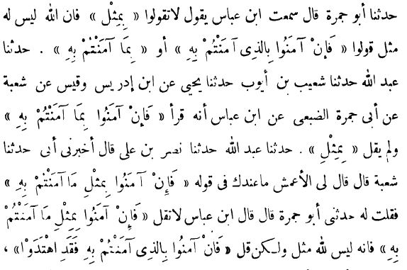

I am a Research Fellow at the University of Groningen and a doctoral candidate, specializing in philology, manuscript traditions, textual criticism, and digital humanities. My work involves computational textual analysis, TEI/XML encoding, and the investigation of historical manuscript variants.
Welcome to my academic portfolio. My research integrates traditional philological methods with modern digital workflows and computational tools to study historical text corpora and manuscript transmission.
Based in Groningen, Netherlands, my current projects focus on structured text encoding, data archiving, and digital scholarly editing.
More on me →
Below you can access the encoded text corpus files (English and German datasets) rendered via TEI Boilerplate: